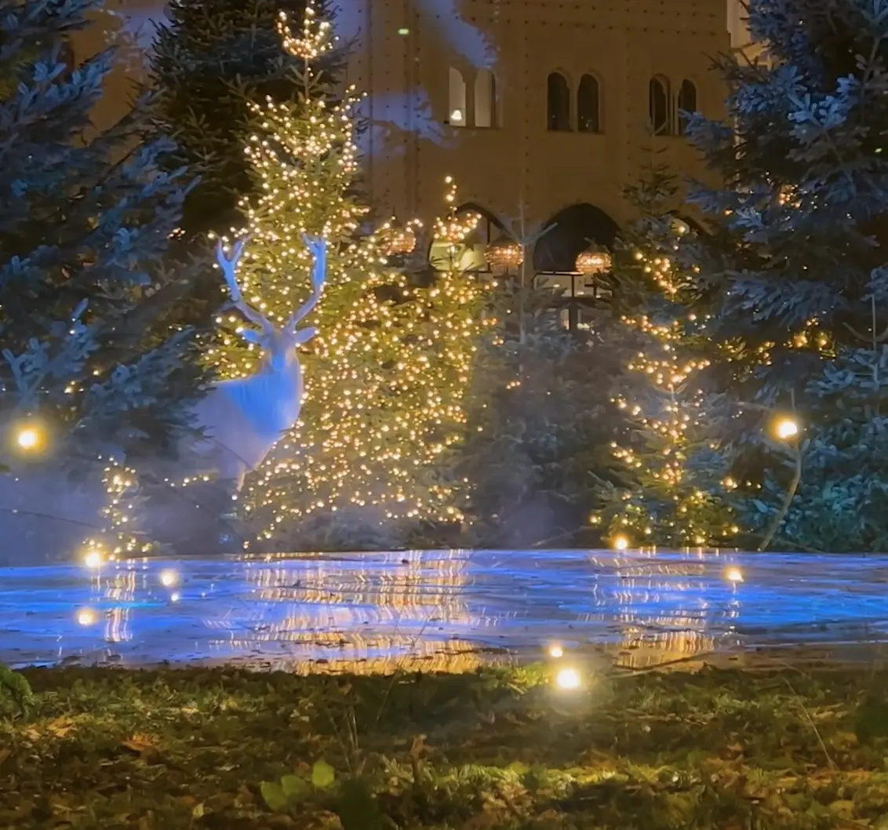
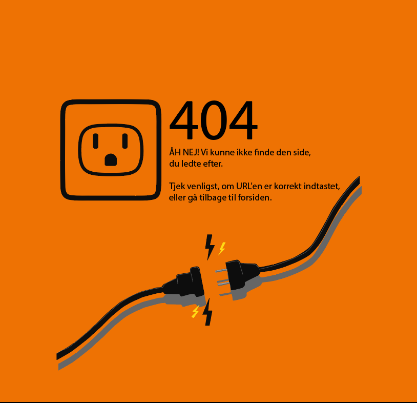

Grundlæggende indhold - I dette tema arbejdede jeg med grundlæggende indholdsproduktion, fra præproduktion og fotografering med smartphone til postproduktion og Lottie-animationer.
Selvom jeg ikke har arbejdet så dybdegående med dette tema, har jeg gennem tidligere og senere erfaringer opnået kompetencer inden for projektorganisering, research og indholdsproduktion. Jeg har forsøgt at vise disse færdigheder i forbindelse med udviklingen af dette site, blandt andet gennem fokus på overblik, struktur og informationsarkitektur.
Links
Opgaver
Et Vintereventyr 05.01
Virksomhedssite 05.01.01

I forbindelse med læringsmålene og det faglige indhold for tema 5 har jeg valgt at synliggøre de kompetencer, jeg har opnået gennem både tidligere og senere temaer på uddannelsen samt gennem praktisk erfaring med indholdsproduktion uden for studiet. Selvom jeg ikke har været en central del af selve opgaveløsningen for aflevering 05.01.01 Virksomheds-site, har jeg arbejdet med flere af de metoder og teknologier, som indgår i temabeskrivelsen. Senere hen i tema 6 arbejdede jeg blandt andet med projektorganisering gennem teamkontrakt, Scrum, Trello boards og Team Canvas, hvilket har givet mig erfaring med struktureret projektarbejde, samarbejde i teams og planlægning af udviklingsprocesser. Derudover har jeg i både tema 3 og tema 6 arbejdet med researchmetoder til analyse af virksomheders digitale tilstedeværelse, herunder brand, målgruppe, produkter og services, designstruktur, brugerrejser og formål. Inden for indholdsproduktion har jeg erfaring med videoproduktion fra både mit arbejde i musikbranchen og studieopgaven Et vintereventyr.
I relation til virksomheds-sitet har jeg desuden produceret den Lottie-fil, der anvendes til 404-fejlbeskeden. Med relevans for første semestereksamen har jeg samtidig arbejdet med læringsmålene fra tema 5 ved at fokusere på overblik, troværdighed og et tydeligt formål i struktureringen af indholdet og udseendet af dette site. Dette er gjort med henblik på at skabe en klar informationsarkitektur. Selvom jeg ikke har udviklet selve virksomheds-sitet, har jeg arbejdet med flere af de centrale elementer, som temaet omhandler både i tema 3 og tema 6. Jeg har derfor kunnet trække på både tidligere og senere læring og praktisk erfaring til at arbejde med indholdsproduktion, digitale brugeroplevelser og visuel kommunikation i forbindelse med dette site. Da jeg ikke har været en del af udviklingen af virksomheds-sitet, undlander jeg at henvise til denne løsning, men i stedet til mit arbejde med Lottie-filen samt projektet Et vintereventyr.
